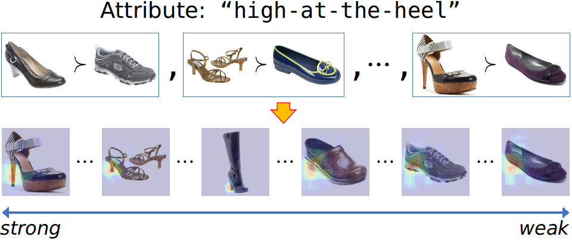

Discovering the Spatial Extent of Relative Attributes

Presented at ICCV 2015
People
Abstract
We present a weakly-supervised approach that discovers the spatial extent of relative attributes, given only pairs of ordered images. In contrast to traditional approaches that use global appearance features or rely on keypoint detectors, our goal is to automatically discover the image regions that are relevant to the attribute, even when the attribute's appearance changes drastically across its attribute spectrum. To accomplish this, we first develop a novel formulation that combines a detector with local smoothness to discover a set of coherent visual chains across the image collection. We then introduce an efficient way to generate additional chains anchored on the initial discovered ones. Finally, we automatically identify the most relevant visual chains, and create an ensemble image representation to model the attribute. Through extensive experiments, we demonstrate our method's promise relative to several baselines in modeling relative attributes.
Paper
|
|
Book Chapter
|
|
Additional Materials
- Watch the talk!
- Discovered chains for LFW10
- Supplementary materials to the main paper (including more qualitative results)
- Spotlight video
- Extended abstract
- Slides
Source Code
Acknowledgments
This research was supported partially by:
- NVidia hardware grant
- Amazon Web Services grant
Comments, questions to Fanyi Xiao